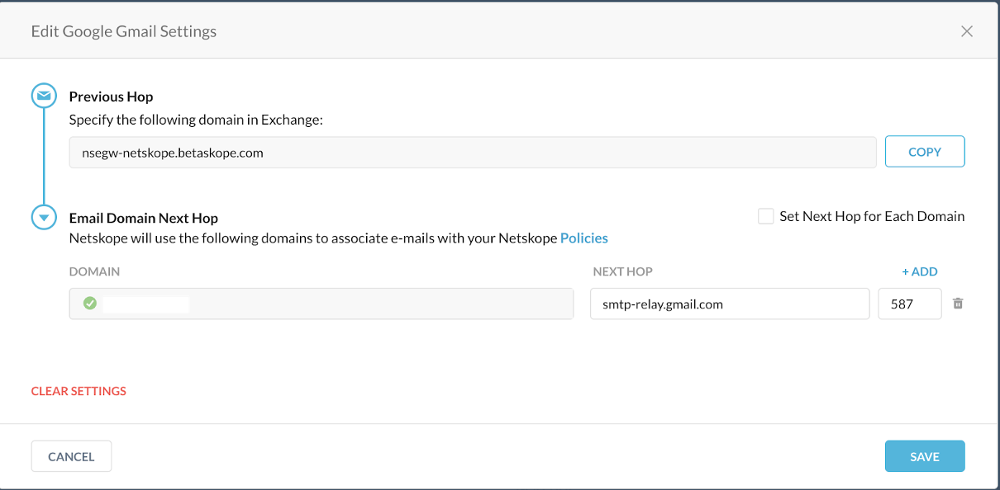
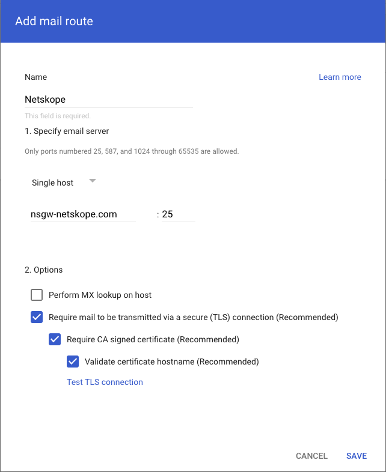
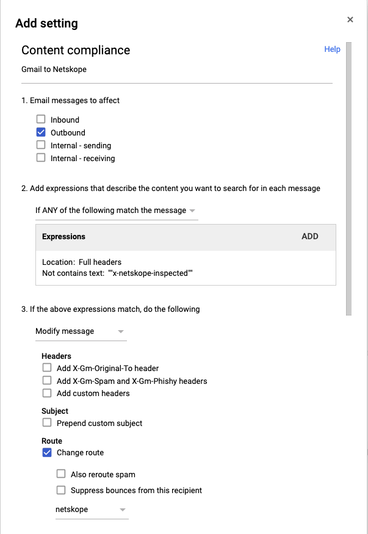
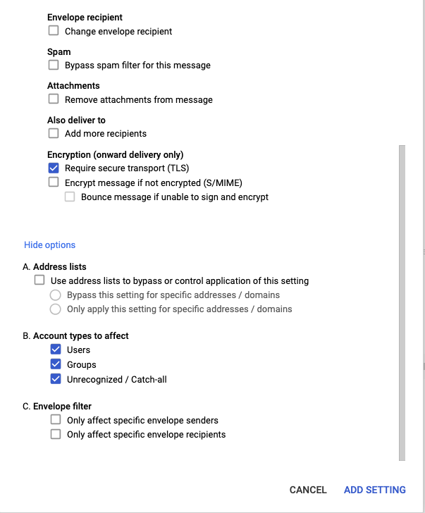

Configure Netskope SMTP Proxy with Gmail
When you configure Netskope SMTP Proxy with Gmail, all outgoing emails from Gmail are sent to Netskope SMTP Proxy for policy evaluation.
The configuration involves the following steps,
Configure the Gmail server and the upstream MTA in the Netskope tenant
In the Netskope tenant UI, navigate to Settings > Security Cloud Platform > Mail Relay and click SMTP.
In the SMTP page, click Google Gmail and then click Edit in the Google Gmail section.
In the Edit Google Gmail Settings dialog box, copy the Netskope domain name under Previous Hop to a notepad. You will require this domain name when configuring Netskope SMTP Proxy in Google Admin console.
In the Netskope section, specify the Gmail domains under Domain.
Warning
Configure each of your MAIL FROM domains. A failure to do this will end up in the email being rejected.
For information on finding the domain in the Google Admin console, see Finding the Gmail domain in the Google Admin console.
In the Next Hop section, specify the IP/FQDN as smtp-relay.gmail.com and Port as 587. Click Save.
Finding the Gmail domain in the Google Admin console
Log into the Google Admin console and click the main menu
 to view the left pane.
to view the left pane.Select Directory and click on Organizational units. The domain names are displayed under Manage organizational units. For example, if the organization unit name is
Emailskopethen specify the domain name asemailskope.com.
Configure Netskope SMTP Proxy in Google admin center
Log into the Google Admin console and click Apps > Google Workspace > Gmail.
On the Settings for Gmail page, click Hosts to define the host that Gmail will use to connect to the Netskope SMTP Proxy.
Under Hosts click Add Route.
In the Add mail route dialog box, specify the host name and paste the Netskope domain name you copied from the Netskope tenant.
Click Test TLS connection to verify that the connection to the host was successful. Click Save.
Configure content compliance to send traffic from Gmail to Netskope
On the Settings for Gmail page, click Advanced settings.
On the General Settings page, go to the Compliance section.
Mouseover Content compliance and click Add Another to add a new entry.
In the Add setting dialog box, set the following:
Under step 1, Email messages to affect, select Outbound.
Under step 2, Add expressions that describe the content you want to search for in each message,
Click Add to add a new expression and select Advanced content match.
Under Location, select Full header and under Match type, select Not contains text.
Enter the following content,
x-netskope-inspected. Click Save.
Under step 3, If the above expressions match, do the following, select Change route and select the Netskope host from the drop-down list.
In the Encryption (onward delivery only) section of step 3, select Require secure transport (TLS).
Click Show options and under step B. Account types to affect, select Users, Groups and, Unrecognized / Catch-all.
Click Add Setting.